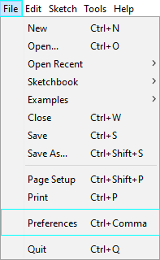
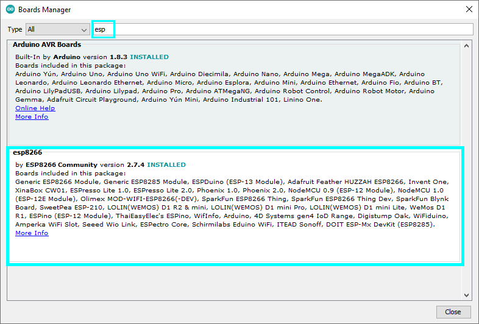
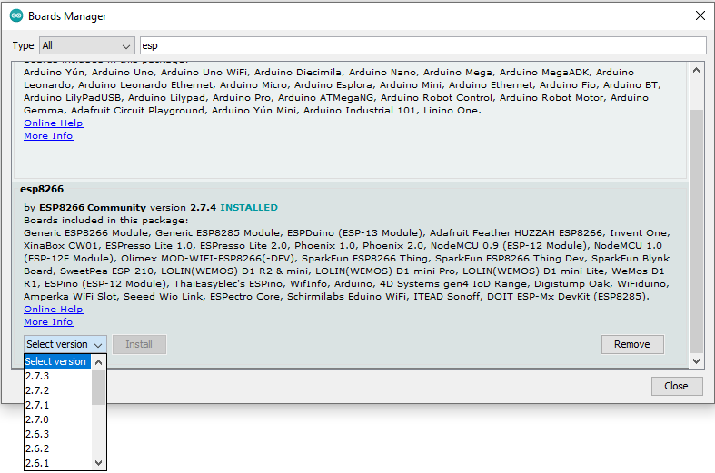
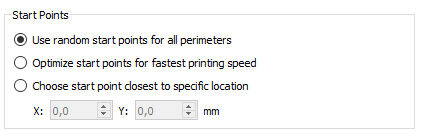

DIY Wakeup Lamp
Especially in the winter it can get difficult to stand up in the morning without any sunlight. Some companys are selling a lot of their rgb lamps for this kind of purpose. So I decided to create one by myself.
Materials and Tools
List of Materials
- ESP Board 8266 MCU (with wifi function)
- 5V LED Stripes (if you only use white, warm-white is recommended)
- Some cables
- Micro USB Female Adapter
- 3x M4x20 screws
- 4x M3x10 screws
- 4x M3x10 nuts
- Common mobilephone charger with 5V and 1A
- 100µF capacitor
- thread inserts
Used Maschines
- Soldering iron
- A 3D-Printer, a CNC or you can also use common handtools like a jigsaw or any other to fulfill this project
Build it
As you can see (in the disassembly gif) the whole lamp only have two main parts. The Lampshade and the base with the electronics. But before we make our hands dirty, we need to flash the ESP-Board first.

Flashing the ESP-Board:
Since the ESP board will be installed later, it makes sense to flash the corresponding code directly to the board at the beginning. If you have never worked with or used an Arduino or similar before, I recommend you to go to the homepage of Arduino and watch the beginner tutorials there.
If you have already worked with it, you can download the code from my GitHub and flash it to the board. > If you already connected to the ESP-Board you can also check the ip-adress of the board via the "Serial Monitor". This will be helpfull if you finished the lamp and start it the first time.
Add-on for ESP8266 in Arduino:
If you never used a ESP Board before it can be a little bit difficult to flash your board. Following some Tips and Tricks that helped me to flash the board. - As you propably already have, download the latest arduino software - To add the ESP-Add-on you need to go under: > File → Preferences 
and add under "Additional Boards Manager URLs:" the following URL: "http://arduino.esp8266.com/stable/packageesp8266comindex.json". 
After that, you can search in the Boards Manager: > Tools → Boards Manager for "esp" and will find the add-on to install. 
- In my example I used the Board: "NodeMCU 1.0 (ESP-12E Module)" but had to change the version down to the software 2.2.0. 
- I highly recommend to test the basic blink example first with your board, to make sure the flashing works fine. You maybe need to change the Builtin-LED for that as well. - Make also sure that you use the right seriel port. This will change if you connec and disconnect the ESP-Board.
Lampshade:
Let's start with the shade. I used my 3D printer for this special design. If you do not own a 3D-printer by yourself you can still go to your local makerspace and let it print there or you could also order a part online. But if you want to make one by yourself, I recommend to use some PVC foil, which is often used for books or covers and some baking paper for the diffusion. You probably will reach a same design as you can see in my cylinder version.
Personally I use "Simplify 3D" as a slicer software. There is a special settings to randomise the starting points at every layer. This is extrem useful if you want to print something with light. If you're familiar with your printer you can also use the setting: "Coasting Distance" to make everylayer perfectly flat, without any blobs. StartPoints"/>
The 3D-Printing part has a special place for the base a bigger hole for the charging cable and 3 small holes with threads. In one lamp I cut in the threads with a thread cutter and in the other one I used threaded inserts both worked really well and I would recommend both. You can also print your threads but I propose to try some bolts first if you never printed threads.
Base with electronics:
The base itself is a bit more complicated, but still simple to make. First you can see some cutout in the middle and on the buttom. Here the ESP-Board 8266 will be attached. Note there are many different boards with different hole patterns and sizes. You probably will need to change the design to your special board
The ESP-board will be fixed with four M3x10 screws and nuts.
On the buttom you can also find 3 holes. These will be used for some M4x20 screws (or any other thread you decided to use) to connect the base to the lampshade. On the top you can find a cutout with 4 little slots. There purpose is to hold the micro-usb adapter not only vertical but also horizontal.
As you can see in some pictures I also added 4 little slots for the cables. After the project I decided that they are not worth the effort and also don't improve the light distribution. So got rid of them. Especially when you used hand tools, you shouldn't care about them.
Assembly:
The assembly is pretty common forward due to the small amount of parts.
First we will attach the LED-Stripes. Like I mentioned before I used 5V LED-Stripes with rgb function. If you just use the lamp for the wakeup function you can also buy white LED-stripes (I recommend using warm-light and not cold light which is more pleasant in the morning). The current in LED Lights is only flowing oneway, so if you cut them and attach them again on the base, be carefull with the orientation. Most LED-Stripes use arrows to indicate the right way.
After attaching the LED stripes we need to connect the single stripes via wire all together.
The next step ist to add the USB-Micro-Female Adapter. As mentioned before I use only the adapter without any PCB-Board. If you are not common with soldering or do not have a small tip, I highly recommend using a usb adapter with a pcb board to bigger soldering pads. "-> Bild einfügen" > If you change the usb-micro-adapter you will need to change the cad-file as well to make space for the pcb. I also recommend to add the 5V and ground cable to the USB-Adapter before attaching it to the base.
I attached the USB-Micro-Adapter with some hot glue to the base but you can also use CA-glue.
Last but not least, we need to connect the 5V from the LED-Stripes with the 5V from the USB-Adpater in parallel. We do the same with the two ground cables.
To save the ESP-Board we will also add a 100µF capacitor also in parallel to the 5V and the ground cable. > At electrolytic capacitor the small leg is always the negativ pin. If they have the same leg height, the pins a marked with a - or +.
You will also need to add 200Omega in serial to the information cable.
Now we can connect the everything the the ESP-Board. You will find on the board a "Vin"-Pin there we connect the 5V cable to that pin. Next to the "Vin"-Pin we can find a pin called "GND" or "G" this is the ground pin, so we connect the ground cables from the LED-Stripes to that pin.
The last cable to connect is the information cabl, we connect the cable to the "D6"-Pin.
The base is now ready to connect to the lampshade.
First run:
To start the lamp we will need to connect our phone charger (needs to have 5V and around 1A - depends on your LED-Stripes) to the lamp. If you flashed the board right, the LEDs will turn on white after a couple of seconds. Until here you did everything right :thumbsup:
So let's connect the Board to your local wifi. If the board has power, it will automatic start a hotspot with the name "RGB-Lamp". If you connect to it and start your browser you will find the following website. On the top you can connect the ESP-Board to your local wifi by adding the passwort.
After that you can control the ESP-Board (and so the lamp) by connecting via the ip adress. If you don't know what kind of ip-adress was giving to your lamp, you can go through your browser to your router and copy the ip-adress.
Now you have full function to the lamp via any device. You can change the color of your lamp, or set an alarm clock.
Hope you enjoy your new lamp! Thanks for you support and interest in my work.